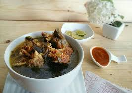

N A S U C E M B A E N R E K A N G

Setiap orang yang berpuasa biasanya disarankan berbuka puasa dengan menu
makanan yang memiliki rasa manis agar dapat memulihkan staminanya.
Namun berbeda di Sulawesi Selatan (Sulsel). Sebagian masyarakat biasanya
berburu kuliner khas leluhur yang memiliki rasa khas seperti rasa masam
dan gurih. Hal itu pun diyakini juga dapat memulihkan kembali stamina usai
berpuasa.
Bagi Anda yang ingin mencoba, bisa belajar memasak sendiri di rumah.
Berikut bahan-bahan yang diperlukan:
-
- 1 kg daging sapi
- 2 kg tulang iga
-
- 5 siung bawang putih
- 8 butir bawang merah
- 6 buah jahe
- 2 buah kemiri
- 1/2 sendok makan merica
- 1/2 sendok makan kunyit
- 2 sendok makan kelapa sangrai (dihaluskan sampai mengeluarkan minyak)
- Daun cemba (asam) yang masih muda.
- Garam
- Penyedap rasa
-
- Cuci bersih daging sapi dan tulang iga kemudian potong-potong sesuai dengan selera.
- Haluskan bawang putih, bawang merah, jahe dan kemiri kemudian campur dan tumis hingga berasa harum.
- Masukkan daging sapi yang telah dipotong-potong tadi ke dalam panci dan masak
- Kemudian masukkan bawang putih, bawang merah, jahe dan kemiri yang telah ditumis dan jangan lupa tambahkan merica dan kunyit. Menyusul tambahkan juga garam dan penyedap rasa secukupnya.
- Masukkan kelapa sangrai yang telah dihaluskan sampai mengeluarkan minyak sebanyak 2 sendok makan. Lalu tambahkan daun cemba segenggam dan masak hingga 3 jam selanjutnya Nasu Cemba siap dihidangkan. Selamat Menikmati.
Kembali Ke Atas